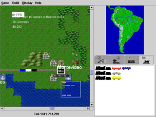

FreeRails is real time multi player strategy game where players compete to build the most powerful railroad empire. Versions of the game are being developed in C++ and Java. Currently the Java version, jfreerails, is the most advanced and the most actively developed.

Click here to play jfreerails 0.2.2 (screenshot above) using Java webstart. (Requires Java 1.4.2 or better.)
If you are interested in getting involved in the Freerails project, post a message to the mailing list.
Links
Freerails Sourceforge page
Download
Mailing List
CVS
Bugs
Feature Requests
JFreerails Javadoc
Screenshots